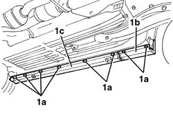
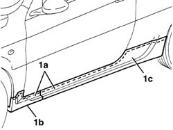
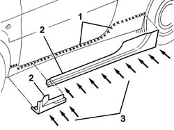
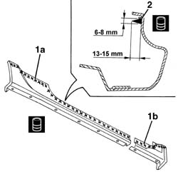
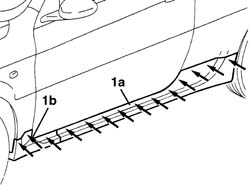

7055A38 l/h or r/h rail moulding (door sill) - r+r
- Path
- Procedures > 70 FITTINGS > 7055 MOULDING AND PROTECTION > 7055A exterior mouldings > 7055A38 l/h or r/h rail moulding (door sill) - r+r
- Kind
- repair procedure (removal / refitting; the operation number is the code)
- Applies to
- all engines; all production periods
- Interactive page
- https://sloeber94.github.io/elrnDB-a147/en/#/3025897
Applies to: all engines; all production periods; only with equipment: GTA
 Removing
Removing
 Refitting
RefittingPosition the vehicle on a four column type lift.
Raise the car.
1. Undo the lower bolts (1a) fixing the front trim (1b) and the rear trim (1c).

Applies to: all engines; all production periods; only with equipment: GTA
Lower the vehicle.
1. Using a cutter, cut the bead of sealant (1a) along the entire upper perimeter of the front moulding (1b) and the rear moulding (1c), taking care not to nick the vehicle paintwork.
2. Keep the trims (1b) and (1c).

Applies to: all engines; all production periods; only with equipment: GTA
Refitting
RemovingCheck that the two parts of the trim are not damaged.
1. Clean the surface of the vehicle where the mouldings are stuck, removing any residues of adhesive; then degrease the surface using heptane.
2. Test fit the trims.
3. Have suitable equipment ready for fitting the trims on the vehicle the sticking process described below.

Applies to: all engines; all production periods; only with equipment: GTA
1. Clean and degrease the surfaces (1a) and (1b) of the trims involved in the sticking. Apply primer to the surfaces (1a) and (1b) using the minimum thickness possible (20 to 50 micron mm is the recommended amount).
 | Type | Component | Name | Qty. |
|---|---|---|---|---|
1 | PRIMER | UNDERDOOR SIDE MEMBER MOULDING | Betaprime 5404 cap. 9.55738/06 | - |
2. Wait for at least three minutes, but no longer than 24 hours (the recommended time is less than an hour), then apply the bead of sealant (hot, following the instructions on the product packaging).
| Type | Component | Name | Qty. |
|---|---|---|---|---|
2 | Sealant | UNDERDOOR SIDE MEMBER MOULDING | Betaseal 1812 cap. 9.55727/02 (quick fix) | - |

Applies to: all engines; all production periods; only with equipment: GTA
1. First place the rear trim (1a) in position, then the front trim (1b).
Tighten the lower fixing bolts.
 | Fastening | Component | Ø | Value (daNm) |
|---|---|---|---|---|
- | Bolt | UNDERDOOR SIDE MEMBER MOULDING | M5.5 x 25 | 0.3 |
Press the trims using the tool.
If necessary, clean any residues of sealant from the trim and the bodywork.

Applies to: all engines; all production periods; only with equipment: GTA
Wait for at least 48 hours before moving the vehicle after the sticking process.